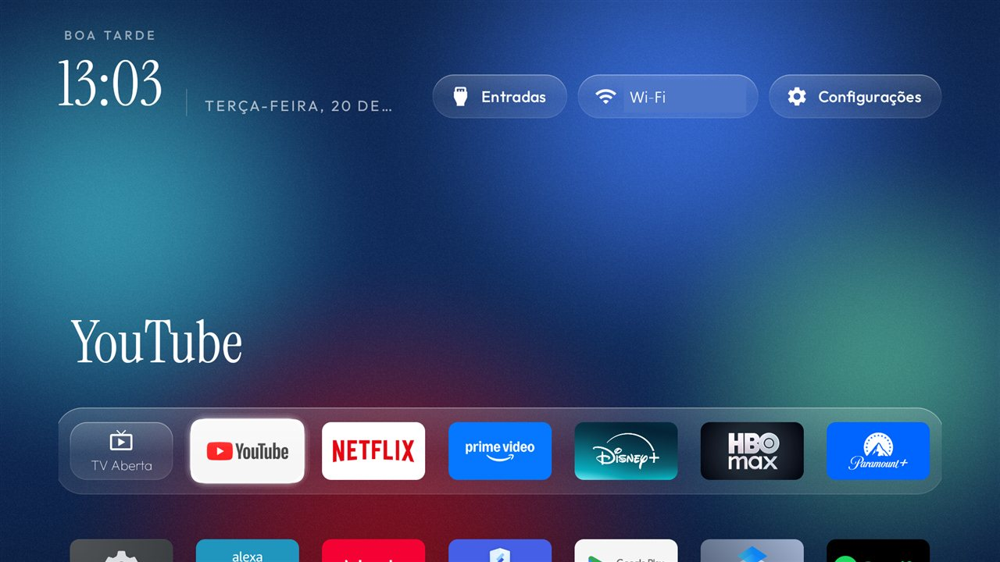
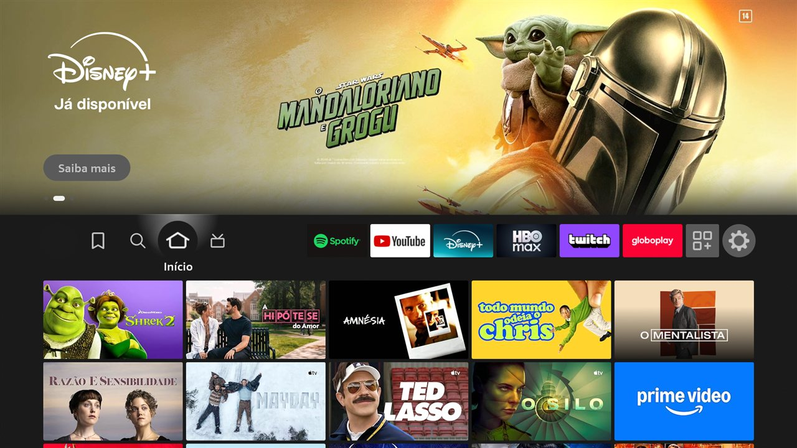
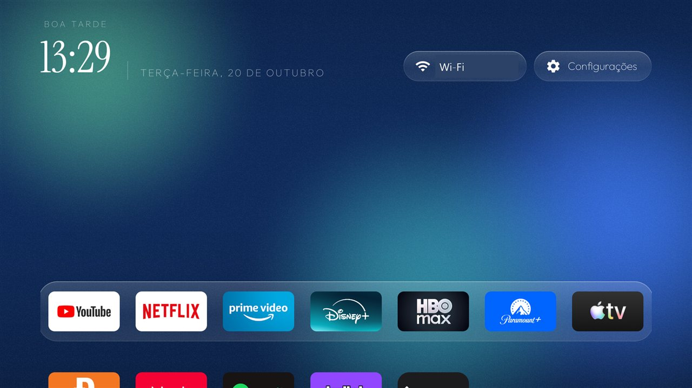

Os mesmos passos nos dois aparelhos, sem root e com tudo reversível: backup, desligar apps de propaganda e telemetria com pm disable-user, zerar animações, desligar o protetor de tela e trocar a home por uma tela própria no estilo glass. Os números saem do próprio Android, lidos pelo adb antes e depois.
Placa G08 · MediaTek MT5896 · 2,4 GB de RAM (2.394 MB) · firmware UTT2.250416.001 AU02
| Item | Original | Otimizado | Diferença |
|---|---|---|---|
| Memória disponível | 923,6 MB | 1.081,5 MB | +157,9 MB (+17,1%) |
| RAM em uso | 1.643,9 MB | 1.615,4 MB | −28,5 MB |
| Processos na memória | 168 | 160 | −8 |
| RAM perdida (Lost RAM) | 26,3 MB | 6,8 MB | −19,5 MB |
| Estado da memória (Android) | normal | normal | sem mudança |
| Pacotes desligados | 0 | 34 | nenhum desinstalado |
| Rastreamento do que você assiste | ativo Samba TV (tcl.ttvs) | desligado | também logs e feedback |
| Conteúdo patrocinado da TCL | ativo TCL Live, mensagens, instalador silencioso | desligado | 8 pacotes |
| Animações do sistema | 1,0× | 0 (desligadas) | menus respondem na hora |
| Protetor de tela | Modo ambiente (com promoções) | Desligado | valores antigos guardados |
| Tela inicial | Google TV, com recomendações | Home glass em português, TV Aberta em 1º | Google TV fica carregada por baixo (91 MB) |
| TV Aberta | Abre na última entrada usada | Sempre na antena, mesmo vindo do HDMI | testado: HDMI 1 → antena |
| Voz no controle | Google Assistente | Google Assistente | mantido, a pedido |
Medido no backup original, por processo.
dreamx38,4 MBttvs32,5 MBusercenter9,5 MBpartnersetup4,9 MBscripts/reativar-home.sh no PC.
Modelo AFTSS (sheldon) · Android 9 · 1 GB de RAM (900 MB úteis) · build PS7717/5741
| Item | Original | Otimizado | Diferença |
|---|---|---|---|
| Estado da memória (Android) | crítico | normal | saiu da faixa crítica |
| Memória disponível | 248,4 MB | 265,3 MB | +16,9 MB (+6,8%) |
| RAM em uso | 822,3 MB | 614,4 MB | −207,9 MB (−25%) |
| RAM livre + cache | 144,0 MB | 358,6 MB | +214,6 MB |
| Pacotes desligados | 1 (NFC, de fábrica) | 42 | 2 recusados pelo Fire OS (protegidos) |
| Telemetria e reconhecimento de conteúdo | ativo | desligado | métricas, logs, tv.acr, minerva |
| Anúncios e compras | ativo | desligado | ID de anúncio, ShopTV, vídeo automático |
| DNS de anúncios | Padrão da operadora | AdGuard DNS | amazon-adsystem, device-metrics, doubleclick bloqueados |
| Animações do sistema | 1,0× | 0 (desligadas) | menus respondem na hora |
| Protetor de tela | Ligado | Desligado | valores antigos guardados |
| Tela inicial | Amazon, com banner patrocinado | Home glass, céu parado | home da Amazon segue carregada (69 MB) |
| CPU da home parada | — | 0% | céu animado usava 10% de um núcleo |
| Voz no controle | Alexa | Desligada | escolha sua; religável com um comando |
Processos do Fire OS, original → final (PSS).
venezia73,0 → 22,8 MBdevice.services60,3 → 26,4 MBvizzini42,1 → 25,3 MBdesligar-apps.sh desliga de novo.

Cada mudança está em um log com o comando que a desfaz. Fire TV: desfazer-tudo.sh (53 entradas). TCL: desfazer-tudo.sh próprio (46 entradas). Os dois religam apps, restauram configurações e removem a home nova.